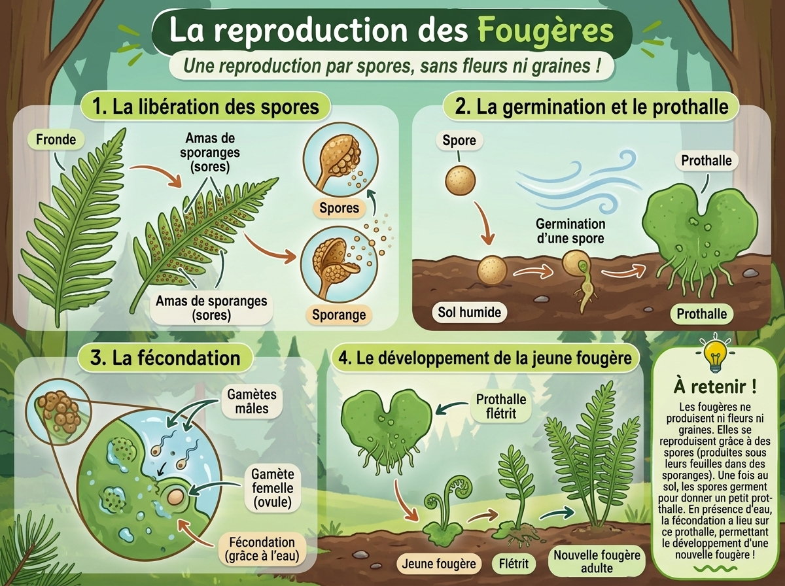
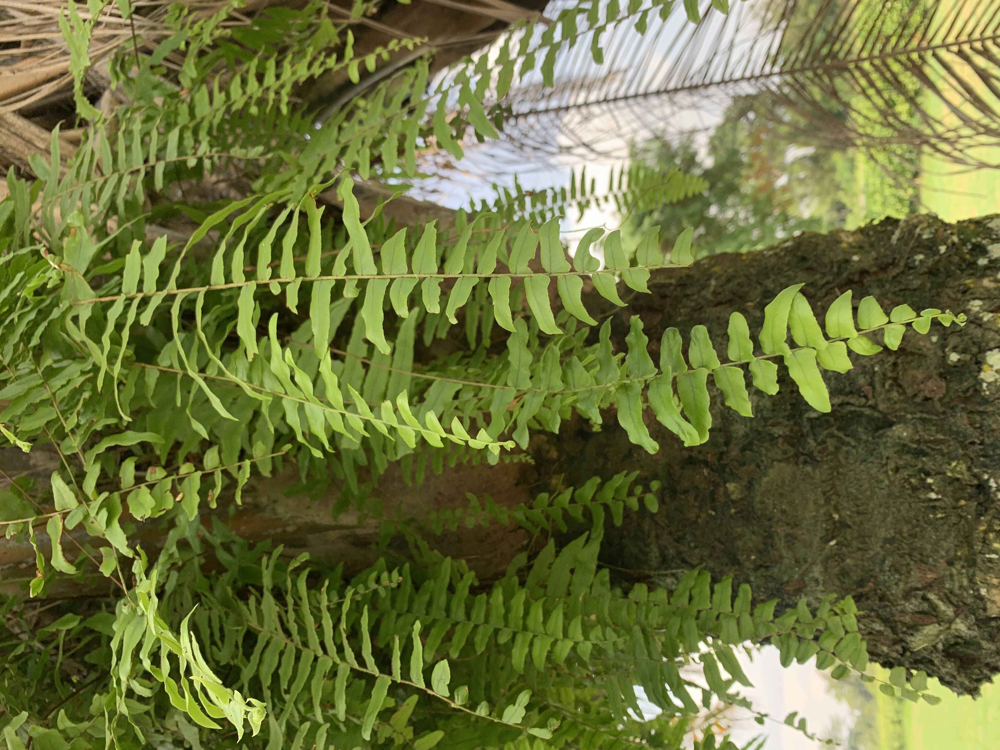

Problème résolu-évolution:
Grandir en hauteur sur terre grâce aux vaisseaux.;
Grandir en hauteur sur terre grâce aux vaisseaux.;
Contrairement aux mousses, elles ont des vaisseaux qui transportent l'eau et la sève dans toute la plante. Elles peuvent donc devenir grandes et avoir de vraies feuilles. Mais elles n'ont pas encore résolu le problème de la reproduction: elles ont toujours besoin d'eau pour que le spermatozoïde rejoigne l'ovule.

fourgères
Vaisseaux, lignine,racines >
≈ 430 Ma · Silurien

